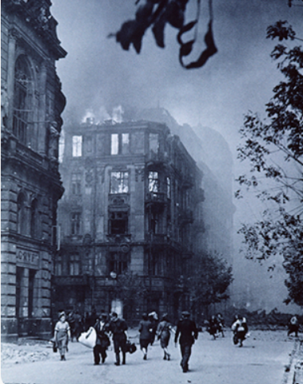

The Warsaw Ghetto Uprising
The Warsaw Ghetto Uprising was a Jewish resistance movement during the Holocaust. It took place in Warsaw, Poland, in 1943. Jewish fighters fought against Nazi German forces who entered the ghetto to deport its remaining Jewish population.

How Did It Begin?
In 1939, Nazi Germany invaded Poland. Soon after, the Nazis began to persecute Polish Jews. In 1940, the Nazis created the Warsaw Ghetto. Hundreds of thousands of Jews were forced to live there under terrible conditions.
The ghetto was overcrowded, and there was not enough food or medicine. Many people became sick and died. Jewish families were separated, and daily life became very difficult.
Deportations
In 1942, the Nazis began mass deportations from the Warsaw Ghetto. Thousands of Jews were taken to the Treblinka extermination camp. Many people did not know where they were being taken. The deportations made the people in the ghetto understand that they were in great danger.

The Decision to Resist
Some Jewish young people decided to resist the Nazis. They formed underground resistance organizations and began collecting weapons. They also built hiding places and prepared for a possible attack.
The Jewish fighters knew that they had very few weapons and little chance of defeating the German army. However, they wanted to resist and defend themselves rather than be taken without a fight.
The Uprising Begins
On April 19, 1943, German forces entered the Warsaw Ghetto to deport its remaining Jewish population. Jewish resistance fighters attacked the German soldiers with guns, grenades, and homemade weapons.
The Germans expected little resistance, but the Jewish fighters surprised them. The fighting continued for several weeks. The Germans eventually destroyed much of the ghetto and captured many of the remaining fighters.

A Video About the Uprising
The following video provides additional information about the Warsaw Ghetto and the Jewish resistance.